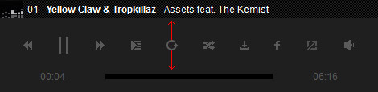

“MP3 Light Player ” Documentation by FWDesign
“MP3 Light Player”
Created: 05/10/2013
By:© FWD (FLASH WEB DESIGN)
Email: contact@webdesign-flash.ro
Thank you for purchasing our script. If you have any questions that are beyond the scope of this help file, please feel free to email via our email. Thanks so much!
Table of Contents
- Important notes read this before anything else.
- Preparing the audio files.
- Preparing SHOUTCAST.
- How to install MP3 Light Player into your html page.
- Constructor parameters.
- Setup playlists.
- Setup facebook share button.
- API.
- Sources and Credits
A) Important notes make sure you read this! - top
Please note that MLP installation and configuration is not complicated but because it has a lot of customizable settings it might seem complicated, please go through the entire documentation before trying to install it into your own page. Basically what it must be done is to copy some html code from the examples we provided and paste it into your own html page and of course add your own audio file.
The server is character case sensitive so make sure that the MLP settings are identical to those from the provided examples.
When using mp3 files located on your server with relative paths you must add all folders that contains mp3's in the content folder, this is extremely important in order for all features to work correctly.
The server is character case sensitive so make sure that MLP settings are identical to those from the provided examples.
Some of the features will not work local like the share button or loading xml playlist file, this is normal behavior because most browser does not allow this, once uploaded on the server it will function properly.
When something is wrong with a MLP actions a red info box with the problem description will appear over it, please note that this box is there to help you understand the problem, for example if a mp3 file is not found the box will appear and inform you about the problem. The box can be closed when clicked or touched.
When testing local on IE7/IE8 or on an older browser that dose not support HTML5 audio it will not work because the flash (.swf) file is trying to comunicate with the browser and this is not allowed, of course it will work fine when tested online.
The MLP skin is constructed from .png images, only a few settings for changing colors are possible like changing the title track color. If you want a different skin the .png files must be modified. The skin is really flexible this is allowing to skin the MLP as you like. We have a great designer in our team so if you need a custom skin please contact us!
B) Preparing the audio files. - top
Currently all browsers except Opera have .mp3 support (this applies to desktop), on a mobile device all browsers have .mp3 support. On a browser that does not have .mp3 support the player will use flash. The good news is that the player will work only with .mp3 files there is no need to use other audio formats.
B) Preparing SHOUTCAST. - top
In order to stream shoutcast instead on adding the mp3 file in the playlist add the shoutcast server address and at the end of it ;.mp3 , like this : http://95.141.24.224:80/;.mp3. Adding the ;.mp3 at the end of the address will force the server to serve the mp3 stream instead of the http web page. Please note that this player has support only for mp3 stream and it will not work correctly with other formats like .acc or .ogg. The good news is that the player will play the stream on all browser no matter which operating system is used, this applies to both mobile and desktop.
C) How to install MP3 Light Player into your html page. - top
This is a small tutorial about how to install MLP into your page. MLP can be e embedded into a html page inside a div of your choosing, it will adapt it's width based on the maxWidth property specified in the constructor, the height is set based on the controller height, if the page is resized and the parent div width is smaller then the maxWidth property MLP will adapt its size accordingly.
In the download files there is a start folder and in this folder there are html files starting with the label "skin", each of this examples have exactly the same structure with different constructor settings you can use one of them to copy and paste the required html code based on skin that you need, I will use the skin-minimal-dark.html as an example for this tutorial.
The skin is created using javascript and .png images, if you want a custom skin please contact us. If you want to create a skin of your own modify the ones we already provided.
- Copy and paste the content folder and the java folder into the same folder with your .html file, inside the content folder there are other folders which are self explanatory. Keep only the skin folders that you need to save space on the server.
- Open skin-minimal-dark.html with a text editor.
- The javascript and css files must be imported, in the head section of your html file add the code from the below image. Please note that the .css file is used to style the playlists thumbnails description text.
- You need a div into which MLP will be added as a child, so create a div and set an id for it, the id is important because it is passed in the MLP constructor, make sure it is unique. The MLP is responsive as follows, the width will adapt based on the maxWidth property specified in the constructor, the height is set based on the skin height, if the page is resized and the parent div width is smaller then the maxWidth property the MLP will adapt its size accordingly.
- Next step is to set up the playlists, to do this copy and paste the ul element with the id playlists into the body element, this id is passed into the constructor property playlistsId, this is how the playlist is identified. Ilustrated below, please note that the code from the image is minified to save space. For more info about playlists please read Setup playlists.
- Next step is to initialize the MLP with javascript, in the head section of your html page add the code from the below image. Please note that all parameters are described in the constructor parameters section.
This is how MLP is installed in a HTML page, please read the Constructor parameters section to understand the MLP properties
D) Constructor parameters. - top
Please open any of the .html files provided with a text editor as reference.
These parameters represents the possible setting for MLP they are all visible in the below image and described below.
//-- main settings --//
- instanceName:"player1" - The player instance name, trough this instance the API is called for example if the instance name is "player1" and if you want to call play of this instance it is called like this player1.play();. Please note that the instance name must be unique for each instance.
- parentId:"myDiv" - The id of the div into which the MLP is added, this id must be unique for each instance.
- playlistsId:"playlists" - The id of the ul html element that represents the playlists, for more info please read Setup playlists..
- skinPath:"content/minimal_skin_dark" - The skin path, the folder that contains the skin graphics.
- mainFolderPath:"content" - The main folder path. This folder contains some important files like the php files and the mp3 files, in this folder you need to add your mp3 folders or mp3 files.
- skinPath:"minimal_skin_dark" - The skin folder path, the path for the skin that you want to use.
- facebookAppId:"213684265480896" - this represents the APP id used by facebook to share tracks, for more info about how to get your own facebook APP id and setup facebook share button please read Setup facebook share button.
- showSoundCloudUserNameInTitle:"yes" - this can be yes or no, show or not show the username in the track title, the username is added at the beggining of the track title and separated by "-" like this: username - track title.
- useDeepLinking:"yes" - this can be yes or no. Allow or not deeplinking, if deeplinking is disabled the facebook share button will share the current page url.
- rightClickContextMenu:"default" - this can be developer, default or disabled. We would appreciate it if you can leave this feature set to developer.
- showButtonsToolTips:"yes" - this can be yes or no.
- autoPlay:"yes" - this can be yes or no.
- loop:"no" - this can be yes or no.
- shuffle:"no" - this can be yes or no.
- maxWidth:750 - a number that represents the player maximum width in px, think of this property as it would be the max-width css property.
- volume:.5 - A number from 0.1 to 1 that represents the volume level.
- toolTipsButtonsHideDelay:1.5 - A float number that represents the duration in seconds until the tooltip button is showed on mouse hover.
- toolTipsButtonFontColor:"#FFFFFF" - The tooltips button font color.
- animateOnIntro:"yes" - this can be yes or no, if this is set to yes once the MLP is loaded and ready the controller will animate with a tween from top to bottom otherwise will appear without any animation, please note that this option also apply to the playlist.
- showSoundAnimation:"yes" - this can be yes or no. Hide or show the equalizer animation.
- showLoopButton:"yes" - this can be yes or no. Hide or show the loop button.
- showShuffleButton:"yes" - this can be yes or no. Hide or show the shuffle button.
- showFacebookButton:"yes" - this can be yes or no. Hide or show the facebook button.
- addCountingToTracks:"yes" - this can be yes or no. Add or not counting to the track title.
- tracksCountingColor:"#FFFFFF" - the tracks counting color.
- tracksCountingLineColor:"#FFFFFF" - the tracks counting line color, the line between the counting and track title.
- titleColor:"#FFFFFF" - the title color.
- timeColor:"#5a5a5a" - the current and total time color.
- controllerHeight:70 - the controller height in pixels.
- startSpaceBetweenButtons:10 - a number that represents the space between buttons in pixels, ilustrated below with the red arrows.
- allButtonsOffsetTopAndBottom:10 - a number that represents the buttons offset top and bottom in pixels, you can think of this as margin top and bottom for the buttons, ilustrated in the below image with the red arrows (please note that this option will only affect the MLP if it is in minified mode). 
- spaceBetweenMainScrubberAndTime:10 - a number that represents the space between the time and main scrubbar in pixels, ilustrated below with the red arrows.
- startTimeSpace:10 - a number that represents the start space in pixels for the total and current time, you can think of this as margin left and right, ilustrated in the below image with the red arrows (please note that this option will only affect the MLP if it is in minified mode).
- scrubbersOffsetWidth:10 - a number that represents the total amount in pixels removed from the scrubber bars progress line when they are at the end (change number to understand it better, useful based on the skin type).
- scrubbersOffestTotalWidth:10 - a number that represents the total amount in pixels added to the entire scrubber bar (change number to understand it better, useful based on the skin type).
- scrubberOffsetBottom:10 - a number that represents the a bottom offset in pixels for the volume button and volume scrubber, you can think of this as margin bottom, ilustrated in the below image with the red arrows (please note that this option will only affect the MLP if it is in minified mode).

//-- playlists window settings --//
- showPlaylistsButtonAndPlaylists:"yes" - this can be yes or no, disable or enable the playlists button and playlists window.
- showPlaylistsByDefault:"yes" - this can be yes or no, if this is set to yes the playlists window is showed as soon as the MLP is loaded and displayed.
- forceDisableDownloadButtonForPodcast:"yes" - this can be yes or no, force to disable or not the download button when the playlist is loaded from a podcast.
- forceDisableDownloadButtonForOfficialFM:"yes" - this can be yes or no, force to disable or not the download button when the playlist is loaded from official.fm.
- forceDisableDownloadButtonForFolder:"yes" - this can be yes or no, force to disable or not the download button when the playlist is loaded from mp3 folder.
- thumbnailSelectedType:"threshold" - this can be threshold, opacity or blackAndWhite, it represents the playlist thumbnail selected state (please note that this setting is always opacity when tested local or on a mobile device).
- startAtPlaylist:0 - a number that represents the playlist number that will be loaded when the MLP loads the first time, if deeplinking is used and the browser url has a playlist link this option is ignored. The playlists count starts from 0 (zero).
- thumbnailMaxWidth:330 - a number that represents the thumbnail maximum width, the width of the thumbnail will vary based on the available space but it will never be higher then this option.
- thumbnailMaxHeight:330 - a number that represents the thumbnail maximum width in pixels, the height of the thumbnail will vary based on the available space but it will never be higher then this option.
- horizontalSpaceBetweenThumbnails:40 - a number that represents the horizontal space in pixels between thumbnails.
- verticalSpaceBetweenThumbnails:40 - a number that represents the vertical space in pixels between thumbnails.
- showPopupButton:"yes" - this can be yes or no.
- showPlaylistItemPlayButton:"yes" - this can be yes or no. Hide or show the small play/pause button that appear over a playlist item.
- popupWindowWidth:750 - the popup window width in pixels.
- openerEqulizerOffsetTop:347 - the popup window height in pixels.
Setup playlists. - top
Open with a text editor one of the html files files starting with the label "skin" as reference.
Setting up the playlist window is simple, an ul tag must be added in the body tag, this ul tag must have an unique id that is passed as a value to the MLP constructor as follows playlistsId:"unique-id", in the examples provided the id is "playlists" but it can be have any value as long as it is unique.
To add/remove a playlist an li tags must be added/removed inside the playlists ul tag, this is illustrated in the below image. The MLP supports unlimited playlists but at least one playlist is required!.
There are five playlist type as follow: HTML, PODCAST, XML, SOUNDCLOUD and OFFICIAL.FM playlist . Each of this type of playlists are explained in detail below.
SoundCloud playlist.
To add/remove this type of playlist in the playlists add or remove the code from the below image into the playlists ul tag. The data-source represents the url of a SoundCloud playlist. The other attributes are self explanatory.

OFFICIAL.FM playlist.
To add/remove this type of playlist in the playlists add or remove the code from the below image into the playlists ul tag. The data-source represents the custom string plus the the playlist id. An official.fm playlist url looks something like this "http://www.official.fm/playlists/yrOG?from=homepage&track_id=MjH0", what you need to get from the url is the playlist id showed in bold and add it after the special string like this official.fm/yrOG.
HTML playlist.
To add/remove this type of playlist in the playlists add or remove the code from the below image into the playlists ul tag.The data-source represents the id of the playlist ul element. The other attributes are self explanatory.
To construct this type of playlist add the code from the below image inside the body HTML element. The code sample is self explanatory. To add/remove tracks add/remove li HTML elements with the data-path attribute.
FOLDER playlist.
To add/remove this type of playlist add or remove the code from the below image into the playlists ul tag.The data-source represents path of the mp3's folder (please note that this type of playlist can only be loaded form the same domain on which the html page resides, also the foler path must be relative to the path of the "proxyFolderPath.php", what this means is that your mp3's folder must be in the same folder or subfolder with the "proxyFolderPath.php" file ). The other attributes are self explanatory.
When adding the folder path to the data-source attribute a special string must be added before it, this string value is folder:, so for example if the mp3's folder path is myFolder the final string must look like this folder:myFolder. For a folder with a mp3's subfolder ex: myFolder/myMp3Folder the final string must look like this folder:myFolder/myMp3Folder .
XML playlist.
To add/remove this type of playlist in the playlists add or remove the code from the below image into the playlists ul tag. The data-source represents the path of the XML file. Please note that the XML path must be absolute, ex: http://www.domain.com/xmlFile.xml. The other attributes are self explanatory. Please note that the XML file does not allow special characters like "&", if you need to use this type of character numeric characters are required, a useful table with all this special characters can be found at this url.
To construct this type of playlist create an XML file with the same structure as the one from the below image (a sample XML file is included in the content folder). The code sample is self explanatory. To add/remove tracks add/remove li elements with the data-path attribute. If you don't need a thumbnail or duration remove the data-thumbpath and data-duration attributes.
PODCAST playlist.
To add/remove this type of playlist in the playlists add or remove the code from the below image into the playlists ul tag. The data-source represents the path of the PODCAST url.
Setup facebook share button. - top
In order for the facebook share button to function a facebook app key is required, this key is obtained by setting up a facebook app as follows:
- Login into your facebook account.
- Open the following link https://developers.facebook.com/apps.
- From the top bar menu select Apps - > Create New App button and complete the fields, it's not important the values passed to the display name and namespace fields, the only requirement is that in the category drop down box to select "Apps for pages".
- A new page will appear, in this page from the left menu bar select Settings. The Settings page will open, in this page the App ID is displayed, this id must be passed into the MLP constructor as follows facebookAppId:your app id here, example in the below image.

- Next step is to click the Add Platform button and from the popup window click on the Website icon.
- A new entry will be added in the Settings page labeled Website, in this tab set the Site URL and the Mobile Site URL to the domain name where the player is uploaded, example in the below image.
- After this additions make sure you save the changes by pressing the Save Changes button.
- Last step is to select from the left menu bar Status & Review, in this page there is a button that is reffering to "Do you want to make this app and all its live features available to the general public?" that must be set to yes, example in the below image.
One important thing to note is that the MLP url must be identical with the url passed to the facebook app, for example if the MLP url is http://www.some-domain.com and the facebook app is configured with the url http://some-domain.com it will not work, both url must be exactly the same.
API. - top
Inside the donwload files there is HTML file called API-example.html, in this file I have added all events and methods for reference, open the page source to see them. Full reference below. Please note that the properties are read only and they can only be written in the consturctor for more info about this please read the Constructor parameters section.
API - public methods:
| Function | Method | Description |
|---|---|---|
loadPlaylist |
loadPlaylist(playlistId):void | Load a playlist based on id, the playlist count starts from 0. |
showCategories |
showCategories():void | Show the playlist selector window. |
showPlaylist |
showPlaylist():void | Show the playlist. |
hidePlaylist |
hidePlaylist():void | Hide the playlist. |
share |
share():void | Share current track on facebook. |
setVolume |
setVolume( Number ):void | Set the audio volume, this method accepts a parameter that represents a number between 0 (audio mute state) and 1 (audio maximum volume). |
scrub |
scrub( Number ):void | Notify instance to scrub (set the audio position), this method accepts a parameter that represents a number between 0 (audio start position) and 1 (audio end position). |
stop |
stop():void | Stops the playback and the loading process if the loading process has started. |
play |
play():void | Start / play playback. |
pause |
pause():void | Pause the playback. |
playPrev |
playPrev():void | Play previous track. |
playNext |
playNext():void | Play next track. |
playShuffle |
playShuffle():void | Play shuffle track. |
API - event listeners:
| Event | Prefix | Description |
|---|---|---|
ready |
FWDAudioPlayer.READY |
Dispatched when the MLP instance API is actually available. |
start |
FWDAudioPlayer.START |
Dispatched when the Mp3 playing has started. |
popup |
FWDAudioPlayer.POPUP |
Dispatched when the player is pop-uped in a new window. |
error |
FWDAudioPlayer.ERROR |
Dispatched when the MLP instance can't load or play the audio file, this event has a property of type string that represents the error message. |
startToLoadPlaylist |
FWDMP3LightPlayer.START_TO_LOAD_PLAYLIST |
Dispatched when the playlist loading has started. |
playlistLoadCompleteHandler |
FWDMP3LightPlayer.LOAD_PLAYLIST_COMPLETE |
Dispatched when the playlist loading is complete. |
stop |
FWDAudioPlayer.STOP |
Dispatched when the MLP instance is stopped. |
play |
FWDAudioPlayer.PLAY |
Dispatched when the MLP instance playback start to play. |
pause |
FWDAudioPlayer.PAUSE |
Dispatched when the MLP instance playback is paused. |
update |
FWDAudioPlayer.UPDATE |
Dispatched when the MLP instance is playing and it's position is changing (useful to update a custom scrub bar), this event has a property of type number between 0 (audio start position) and 1 (audio end position). |
updateTime |
FWDAudioPlayer.UPDATE_TIME |
Dispatched when the MLP instance current duration is changing. This event has two properties of type string curTime and totalTime. |
playComplete |
FWDAudioPlayer.PLAY_COMPLETE |
Dispatched when the MLP instance playback has reached the end of the audio file. |
API - methods:
| Name | Method | Description |
|---|---|---|
getIsAPIReady |
getIsAPIReady():Boolean |
Returns the API state, true if ready, false if not. |
getCatId |
getCatId():Number |
Returns the current category id, the counting starts form 0. |
getTrackId |
getTrackId():Number |
Returns the current track id, the counting starts form 0. |
F) Sources and Credits - top
This component was made by Tibi from FWD (FWDesign) FLASH WEB DESIGN, for more information and support contact us at contact@webdesign-flash.ro
Once again, thank you so much for purchasing this item. As I said at the beginning, I'd be glad to help you if you have any questions regarding this MLP and I'll do my best to assist.
FWDesign